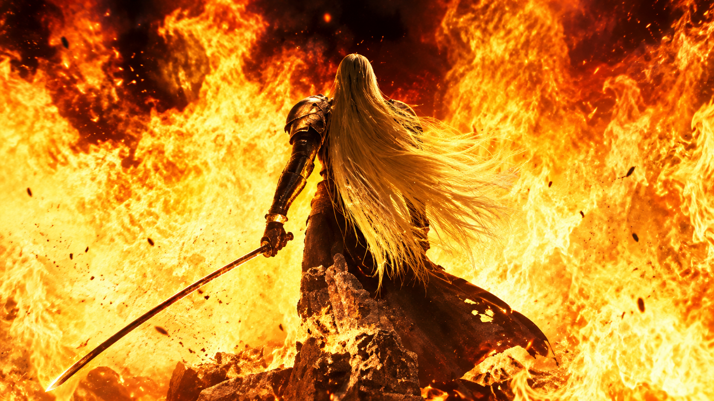

Final Fantasy 7


Por que é o melhor jogo?
Final Fantasy 7 é amplamente considerado um dos melhores jogos de todos os tempos, devido à sua narrativa envolvente, personagens bem desenvolvidos e trilha sonora icônica.
Pontos marcantes da evolução do jogo:
História e Temas Profundos
- Aborda temas maduros e pioneiros para a época, como ambientalismo, ecoterrorismo e os perigos do capitalismo desenfreado representado pela megacorporação Shinra.
Revolução Gráfica e Técnica
- Marcou a transição histórica da série para os gráficos em 3D com polígonos e revolucionários cenários pré-renderizados.
- Introduziu cenas cinematográficas (CGs) de cair o queixo na época do PlayStation 1, mudando o patamar de como histórias eram contadas nos videogames.
Trilha Sonora Icônica
- A música composta por Nobuo Uematsu é uma obra-prima atemporal.
- Temas como a introdução de Midgar e a música de chefe (One-Winged Angel) definiram a identidade sonora dos RPGs.
Sistema de Matéria inovador
- O sistema de Matérias permite equipar esferas mágicas nas armas e armaduras dos personagens
- Dá total liberdade para criar combinações únicas de magias, invocações e habilidades passivas, adaptando qualquer personagem para qualquer função no combate
Personagens Marcantes
- Cloud Strife: O protagonista que quebrou o estereótipo do herói perfeito ao apresentar uma mente profundamente fragmentada, memórias falsas e uma crise de identidade que o jogador desvenda aos poucos.
- Aerith Gainsborough: Representa a conexão com o planeta e a esperança. Sua personalidade alegre contrasta com um destino trágico, protagonizando um dos momentos mais chocantes e emocionantes da história dos videogames.
- Tifa Lockhart: Uma lutadora poderosa que equilibra sua força física com uma personalidade acolhedora e empática, funcionando como a "âncora emocional" e a chave para ajudar Cloud a recuperar sua verdadeira sanidade.
- Barret Wallace: O líder explosivo e apaixonado do grupo ecoterrorista Avalanche, cujo visual imponente esconde um pai extremamente dedicado e um homem lutando pelo futuro de sua filha.
- Red XIII (Nanaki): Uma criatura leonina inteligente e de vida longa que traz uma perspectiva ancestral à história, lidando com o fardo de ser um dos últimos de sua espécie e com o orgulho de seu povo.
- Sephiroth (Antagonista): O lendário soldado que enlouquece ao descobrir as origens de sua criação, tornando-se uma ameaça de proporções divinas. Sua imponência, a espada Masamune e sua obsessão por Cloud o consagraram como um dos maiores vilões da cultura pop.



Trilha Sonora Icônica
Músicas do Remake
- "Bombing Mission" (ou "Opening - Bombing Mission"): A música de abertura do jogo. Ela mistura percussão militar com uma orquestra gigantesca, estabelecendo imediatamente o tom épico da nova trilogia.
- "One-Winged Angel - Rebirth": O tema definitivo de Sephiroth. A versão do Remake consegue deixar o que já era perfeito ainda mais grandioso, adicionando novos coros em latim e quebras de ritmo tensas durante a batalha final.
- "The Airbuster": Um dos rearranjos de chefe mais elogiados pelos fãs. A música clássica de batalha ganha guitarras pesadas, violinos frenéticos e um coro que explode no ápice da luta contra o robô da Shinra.
- "Hollow": A música-tema oficial do Remake, composta por Nobuo Uematsu com vocais de Yosh (da banda Survive Said The Prophet). É um rock melancólico que reflete perfeitamente os conflitos internos e o isolamento de Cloud Strife.
- "Main Theme of FFVII - Sector 7 Undercity": A versão de exploração da Favela do Setor 7. Consegue traduzir uma sensação única de paz, nostalgia e melancolia enquanto o jogador anda pela comunidade.
Músicas do Rebirth
- "No Promises to Keep": A música-tema oficial do Rebirth. Cantada por Loren Allred (voz de The Greatest Showman), essa balada arrebatadora é performada por Aerith no teatro de Gold Saucer e resume a essência emocional do jogo.